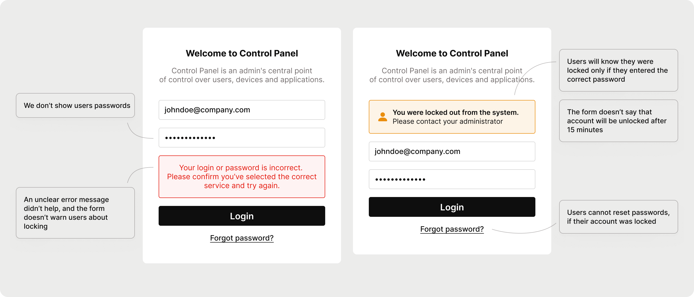
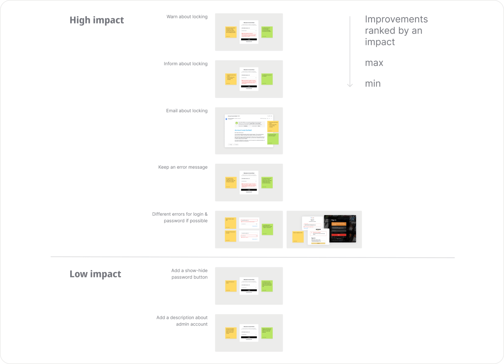
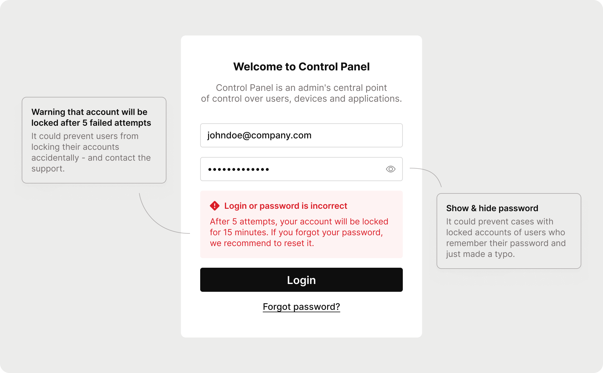
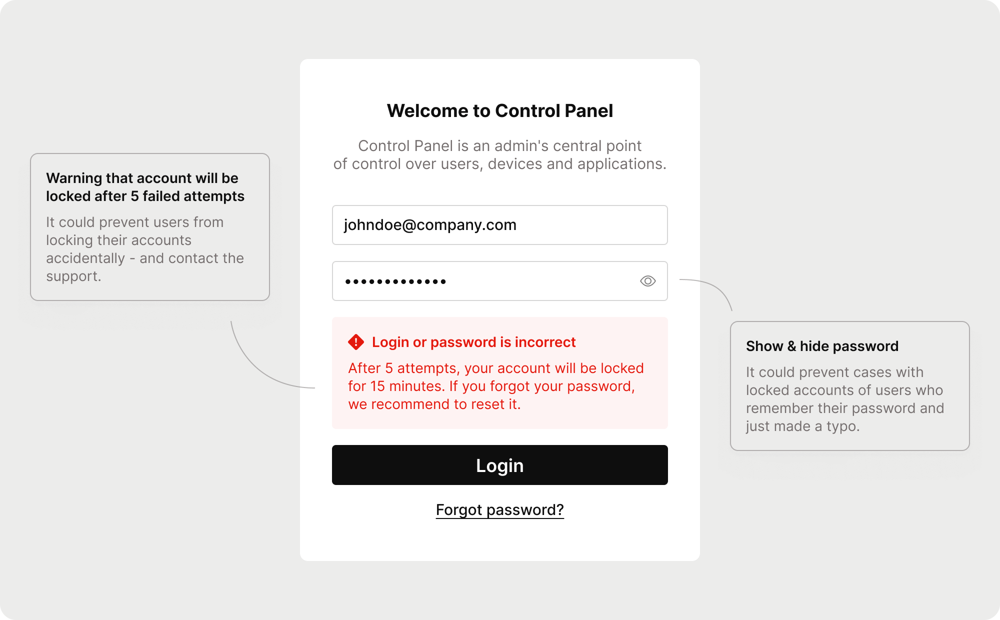
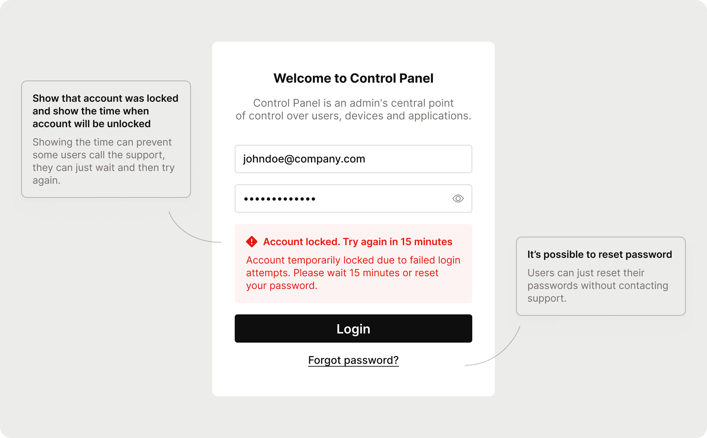

Initiative
While there wasn't an established process for reviewing support cases in our company, I took the initiative to dive into them myself. I discovered a significant number of cases related to blocked accounts. Intrigued, I decided to investigate the login form's functionality.
The Issues
It turned out the login form was poorly designed:
  - It didn't warn users about account blocking after several failed attempts.
- The form didn’t notify users when they were blocked; it only notifies users about blocking if they typed the correct password.
- The blocking lasts for 15 minutes, but the form didn’t warn users about it.
- The form didn’t allow password resets if the account was blocked.
These issues explained the high number of support requests. Moreover, there were error messages in different styles and with unclear wording.
Solution
While tempted to redesign the entire form (and I redesigned it, but only for the portfolio case, the original form looks less appealing), I realized that small, targeted changes would be more efficient and quicker for the development team to implement.
 I prioritized these changes based on their potential impact, drawing from my experience, and presented them to stakeholders.
Project Status
The project was approved and is currently in development.
Although I can’t present metrics yet, I plan to use the support case numbers as a baseline post-release. My hypothesis is that these small changes will enhance user experience providing clarity and transparency and, as a result, reduce support requests.